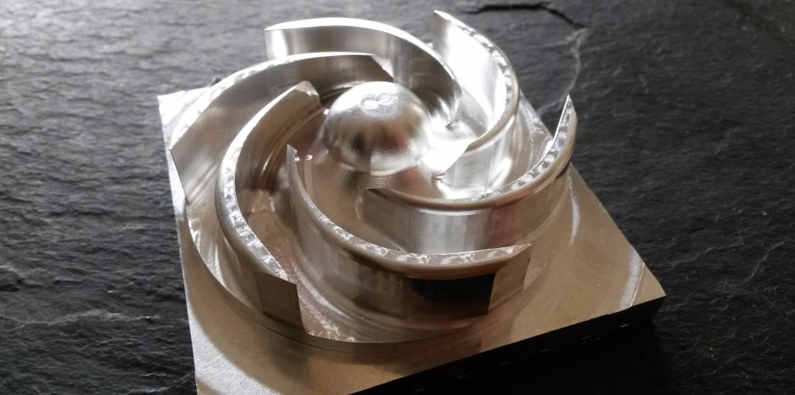

The history behind it
Cooling has been the big headache and a fast learning curve for me. But I can at least say it is under control, albeit not ideal though. I have made 6 different pump impeller designs and countless radiator and path revisions. All only getting me slightly closure to the ideal each time. With each year of development came lots more power which is not a direct correlation to thermal efficiencies. Compression and cylinder pressures play a big part and interestingly crankshaft dwell.

Prototype 7075 impeller; 1 off 6
The Problem
The big achilles heal is the liners and the open decks. The V4 Honda is a great block to work with but the open decks do not tolerate high pressures well. I distorted 2 blocks each within 20 minutes of use due to the thermal and compression expansion rates in the combustion chamber. I have a design in mind for my own engine but I intend to prioritise the chassis developments at the moment.
 Intricate temperature sensor housing manually machined
Intricate temperature sensor housing manually machined
How it was done
Boring and shrinking the many sets of liners in was a full 35 hour weekend of eyes wide open flat out concentration on Freddy’s Bridgeport to get the clearances as well as the bore to crank alignment just right for shrinking and machining. All faces and bores within 10 microns and super slow cuts to minimise the distortion through heat and vibration from my primitive homemade boring tools and Freddy’s excellent engine jig. I eventually ended up using my manual Bridgeport to do the last 2 engines which I actually preferred because I wasn’t sleeping in an industrial unit in Peterborough next to a compressor; I was in my own workshop. I then machined the cases and heads with delicate cuts of around 20 microns. After each cut I would assemble the engine until the backlash on the gear driven cams was between 1-5 microns. The concentration required is intense; almost falling over with exhaustion after an extensive stint on the machines.
 Front radiator: Coolant pipes were packed with sand and hot bent
Front radiator: Coolant pipes were packed with sand and hot bent
The result
I digress, fast forward to today and the coolant system now has a 7 blade, billet machined impeller with reduced cavitation along with a massive 5 litres, 3 radiator, double pass setup, all in high pressure areas. Not the low pressure; stick it where we’ve got space, conventional OEM approach. I made the radiators from 1050 sheet in the 'O' condition, mounting lugs with 6082 using 1050 and 5356 rods respectively. Pre heated to a uniform 150°C before welding. Getting the air out of the circuit is a tricky job; multiple bleed points required! Very satisfying making a radiator, I’d recommend it as therapy. The complex cooling system is a result of lots of race testing and failing. The isle of man road circuits favour the setup better as they offer longer faster straights with ample air flow. Short circuits here in the UK can get difficult but a sympathetic fuelling and ignition map can help. I did the mapping completely from scratch with a blank ecu. I think I've clocked up over 250 maps as I've learned how to write a complete set of parameters for a new engine configuration .
What's next?
I would like to be at the point where I could see what the pressures were in different parts of the engine as I know I have huge pressures around the jackets and I am simply masking it with a huge cooling system. Normalised race temp is currently 92°C; this is a far from ideal performance temperature. 75-80°C is where the optimum trade between power and reliability exists. I am throwing away a good 5hp which is just not on.
The additional water, rads, pipes and ducting is costing me performance in so many ways it’s upsetting; the drag of air passing through so much finned vertical faces, the weight of all that water, the mechanical strain of pushing all that water, the additional width to my frontal area and the compromise to the high pressure ducting to the engine. The answer is to make my own engine with thicker sections around the bores and use composite coatings. It would mean making everything again as I would have so much space to use for all the good things again. Perhaps a compromise would be to do the engine and keep everything the same but slow the flow right down? Maybe not, I’m getting older faster, best not stitch myself up for another 5 years of work just yet.
Foundry needed
The multiple last place finishes have been down to the steering and/or overheating. I have built in many safe guards to protect the engine from melting. Anything over 85 degrees and the acceleration injection correction starts to drop off, mixture richens and advance drops. The ECU then monitors conditions as the temp rises further which effectively drops performance to the point until you are riding a dead horse. It does just enough to let me ride for the remaining laps and try to maintain corner speed whilst cruising down the straights just to get lap experience. There is so much to evaluate as well as ‘race’ that the amount of laps needed is high. If my calculations are right; at 14K rpm it is flowing a massive 3.3 litres of water every second! The temperature rises 5 degrees by dropping to 10K rpm; I like (or perhaps in this case I don't like) to imagine the pockets of dancing steam around the jackets at those temperatures, surface temperature of the pistons is massive. Not helped by the fact that modern pistons are so waisted there is less surface to conduct the heat to the thermally inferior liners. If only I had a foundry!
Cut through of the air flow through the seat section passing through the curved radiator
Front radiators making the most of the avaliable high pressure airflow